Three directions pulled from real, shipped nutrition & health app screens (via Mobbin), each evaluated against the research conclusions and 5W audience segments. Palettes were sampled from the screenshots' pixels; typography is described from what the screens show.
No direction is selected here. This page is input for that decision. Full notes and citations are in 01-direction-options.md.
A spreadsheet in a phone: white grouped lists on light gray, hairline dividers, and every number right-aligned in its own column. Color is used almost only for meaning: one saturated blue for actions and totals, plus small tinted bars for macros. It reads as institutional, complete and auditable, never decorative.
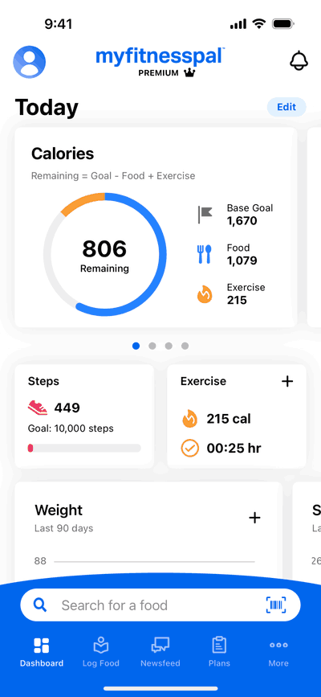
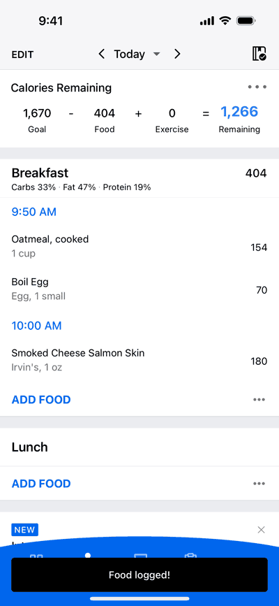
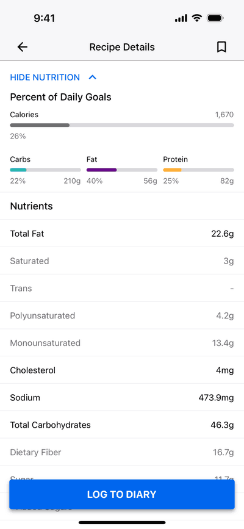
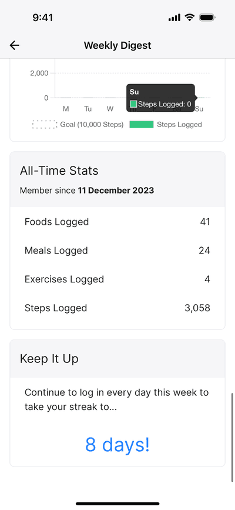
#0066EASingle action color, CTAs, totals#FCFCFCList / card surface#EAEAF0Grouped gutters, dividers#000000Ink, food names, numeralsCalm, magazine-like wellness. Warm oat and cream grounds replace white, cards are barely lighter than the page and float on soft shadow, and there's a lot of empty space around one question at a time. Color comes from nature (leaf and pine greens, a grainy gradient) with a single warm coral accent. It feels like a cookbook more than a tool.
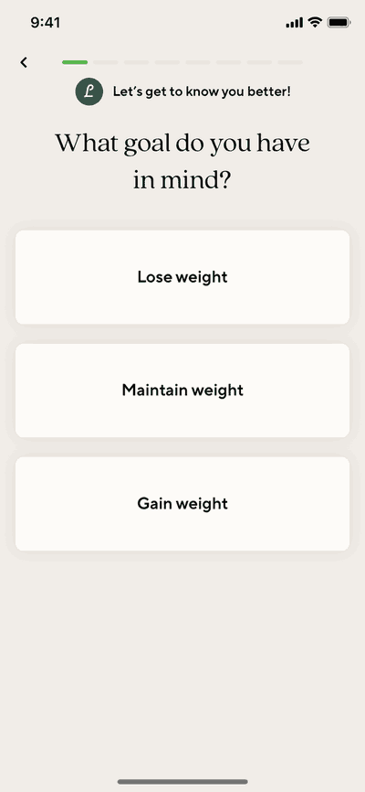
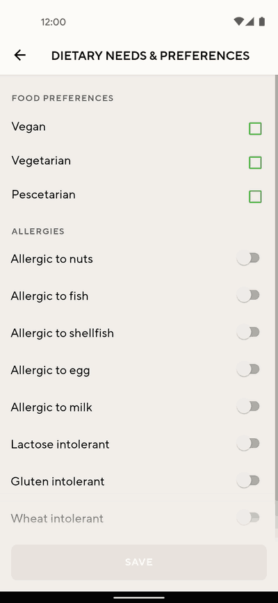
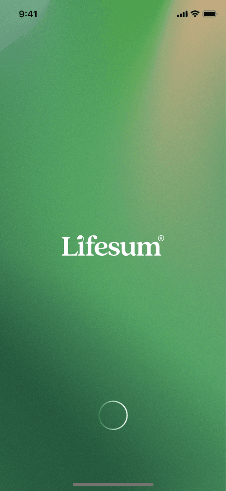
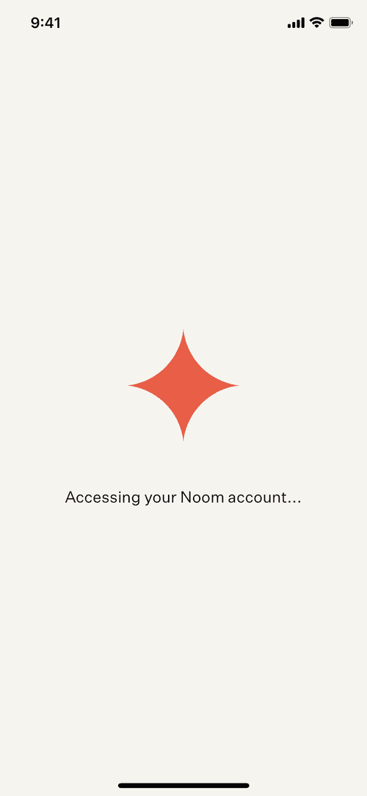
#F0EAE4Oat page ground#364E48Deep pine, darkest brand tone#54B44ELeaf green, progress, checks#E45A42Coral, single warm mark#FCF6F6 on #F0EAE4 are nearly 1:1 contrast, held by shadow only, and airy layouts slow the one-handed in-the-moment log.Confident and motivational: a stark black-and-white base (black pill buttons, black feature cards) punctuated by one warm energetic hue and occasional character illustration. Numbers and headlines are big and heavy, so they read at arm's length. It's a coach cheering you on rather than a ledger or a cookbook.
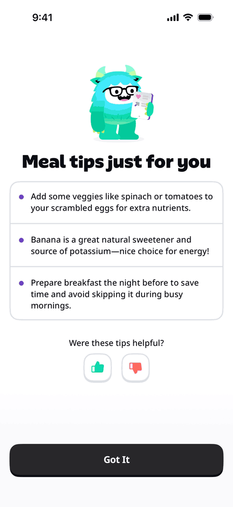
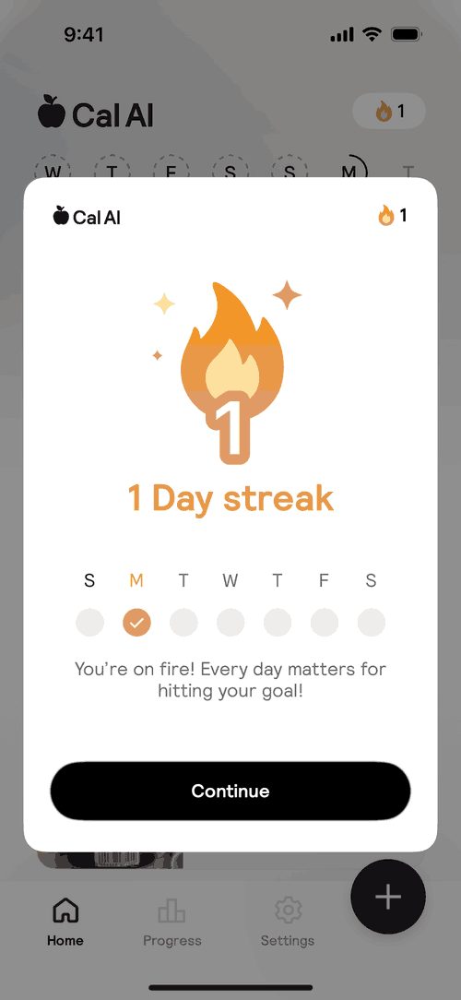
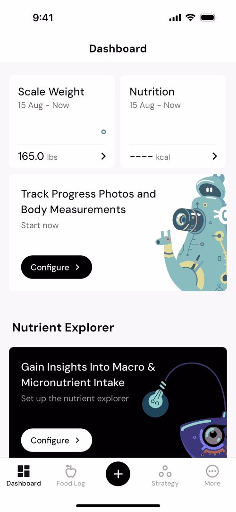
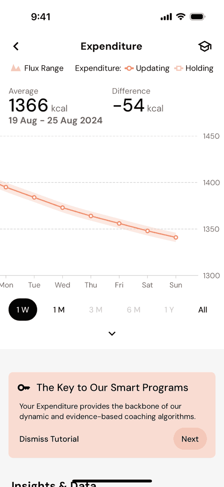
#000000CTA pills, feature cards#F6F6F6Ground behind white cards#E49642Warm amber (coral #F0906C kin)#0CD8AEElectric mint, mascot| Criterion (source) | A · Clinical Ledger | B · Oat & Serif | C · Bold Coach |
|---|---|---|---|
| Fast in-the-moment logging (H1, Seg 1) | Good | Weak | Strongest |
| Trust in numbers (H2, Seg 1 & 3) | Strongest | Weak | Mixed |
| Recipe discovery first-class (H3, Seg 2) | Weak | Strongest | Weak |
| Recipe → log handoff (H4, Seg 3) | Direct precedent | Neutral | Good CTA base |
| Differentiation from paywall-happy incumbents | Poor | Moderate | Strong |
| "Minimize manual work" (brief) | Cheapest | Cheap | Costly if illustrated |